MRI Data Formats
2026-05-19
Medical Image
Three ways to conceptualize:
- Representation of internal structure/function
- Mapping of numeric values to spatial position
- Data line converted to matrix projected to screen
Important to maintain data integrity:
- Surgery
- Diagnoses
- Investigation
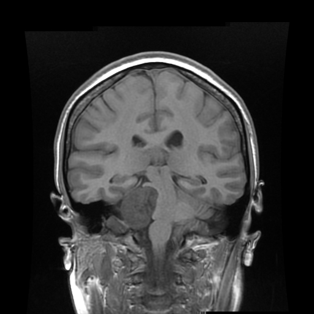
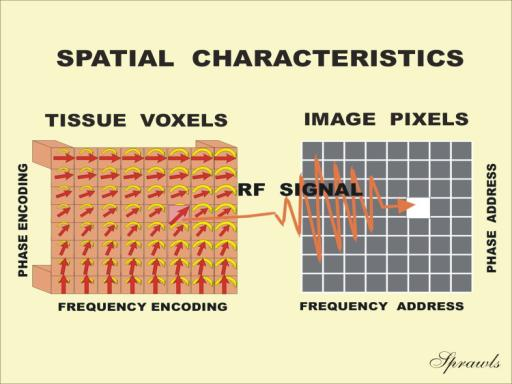
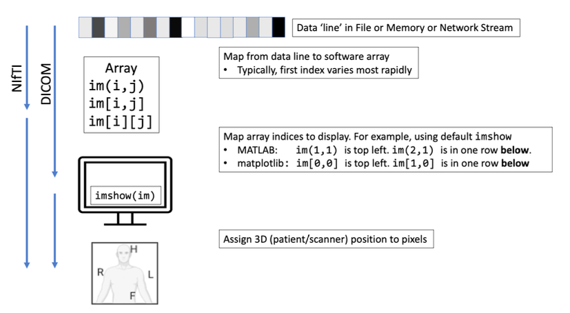
Medical Image: Three P’s
- Pixel Depth
- Number of bits per pixel
- Photometric Interpretation
- Samples per pixel (number of channels)
- Pixel data
- Stored as integer, float; Scaling factor
- Comes after header (metadata)
- Size = rows x columns x pixel depth (x time)
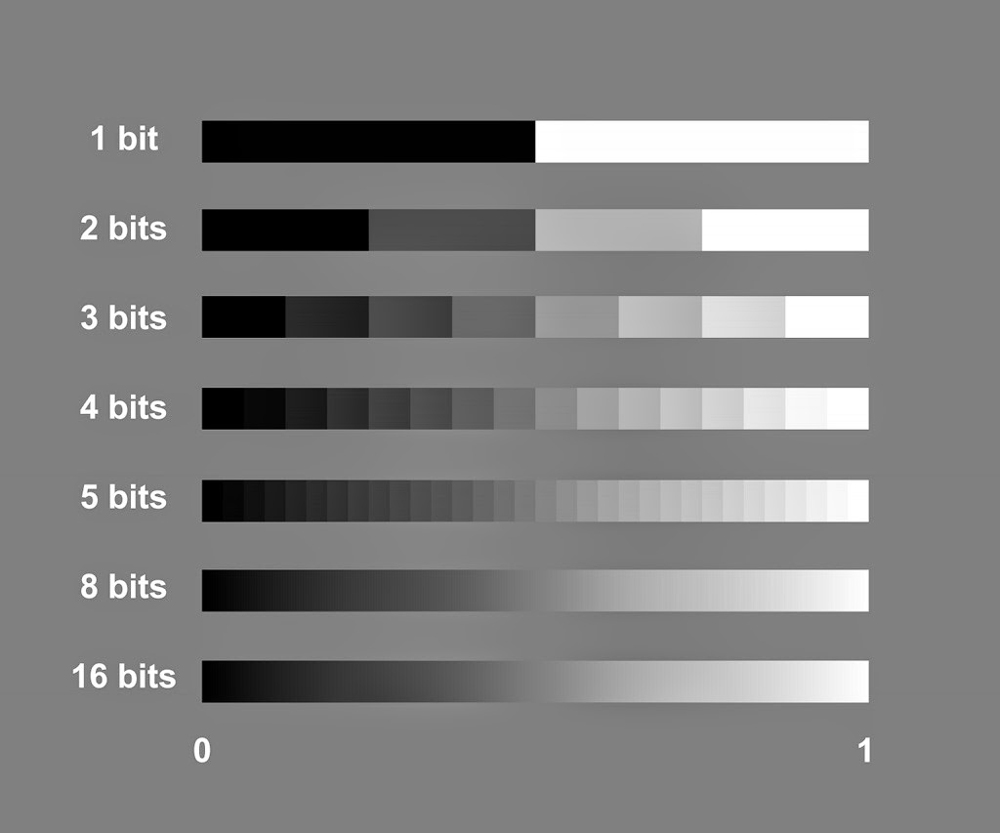
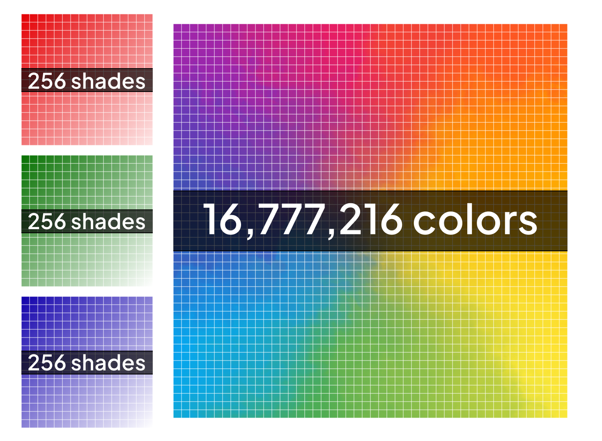
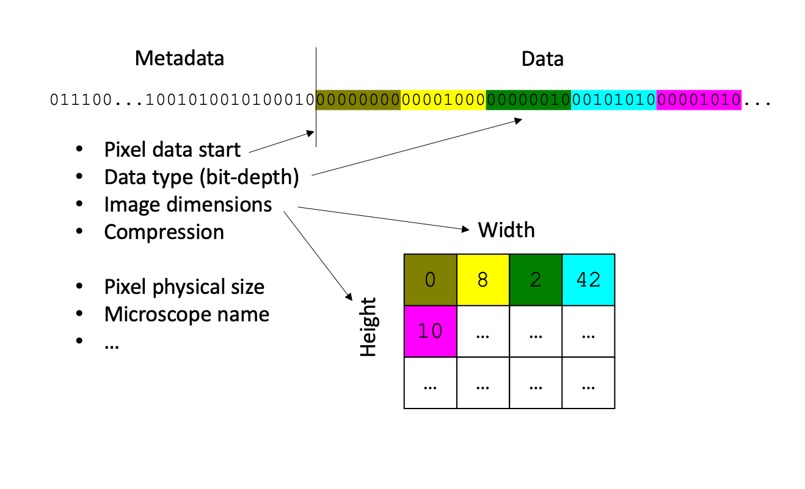
Medical Image: Metadata
- Beginning of data line
- Contains information to interpret data line
- Image matrix dimensions
- Spatial resolution
- Pixel depth
- Photometric Interpretation
- Additional
- Scan protocol
- Type of Scanner
- Patient Info
Clinical Data: DICOM
- Digital Imaging and Communications in Medicine
- Details:
- Acquisition
- Request
- Transfer
- File Structrure
- More …
- Complex
- 22 Parts
- 4000+ pages
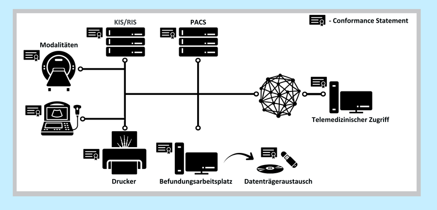
DICOM: Structure
- Single file format: Header & Data
- Comprehensive
- Header
- Scanner
- Patient
- Protocol
- Notes
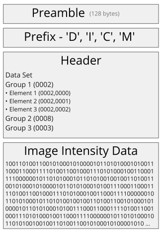
DICOM: Data Element
- Header organized into Data Elements (called attributes)
- Four main parts:
- Tag
- VR: Coded datatype
- Length: Number of bytes in Value
- Value: Information
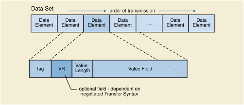
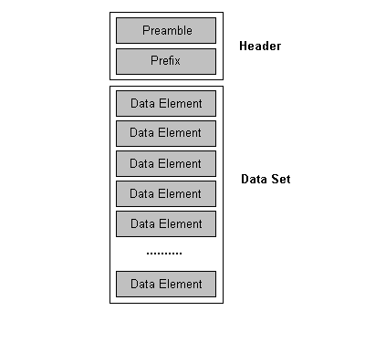
DICOM: Header
- Common Groups
- 0002: Meta information
- 0008: Session information
- 0010: Patient information
- 0018: Protocol information
- Others …
- Notice: Tag, Length, Meaning, Information
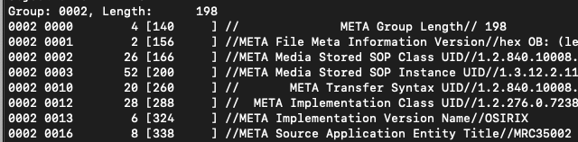
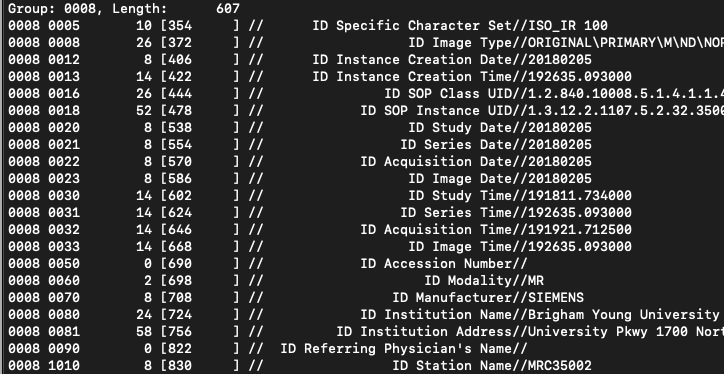
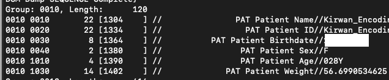
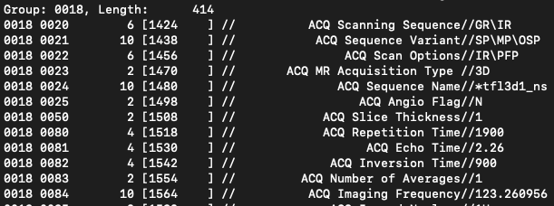
DICOM: Mining Header
Research Data: Tower of Babel

NIfTI
- Neuroimaging Informatics Technology Initiative (NIfTI)
- Developed by Data Format Working Group
- Supported by AFNI, FSL, SPM
- Simple, standard, streamline
- Poster
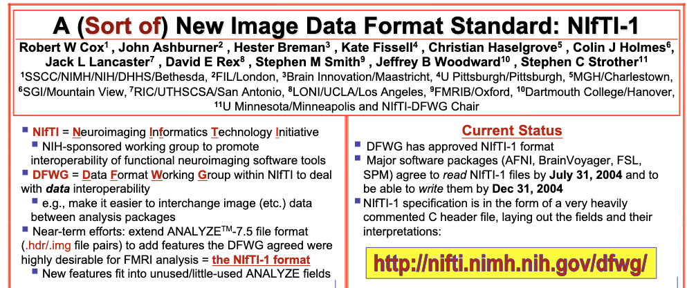
NIfTI: Structure
- Modeled after Analyze 7.5 format
- Backwards compatible
- Two formats supported:
- Multiple file: .hdr = Header, .img = Image
- Single file: .nii = Header & Image
- Defined structure
- Eases use across modeling packages
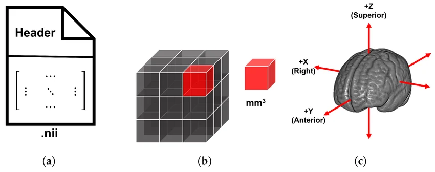
NIfTI: Resolve issues
- Embed orientation
- QForm: Map voxel to scanner frame of reference
- SForm: Map voxel to common space (MNI)
- Resolves ambiguous left
- Dimensionality
- 3: Anatomical
- 4: Functional
- 6: Diffusion
- 4-7: Statistical
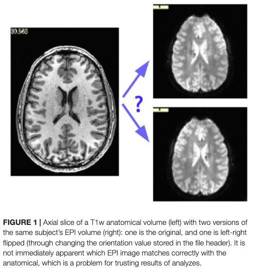
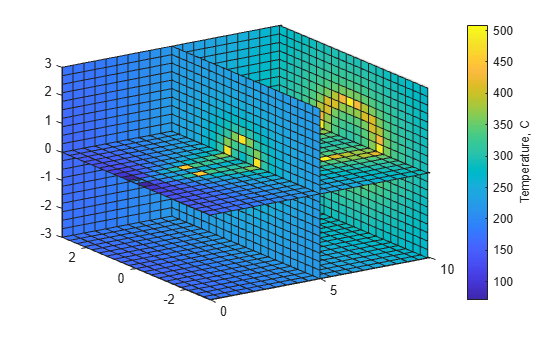
NIfTI: Orientation
- Describe in 3 dimensions:
- 1: Left-Right (R)
- 2: Anterior-Posterior (P)
- 3: Superior-Inferior (S)
- Voxel reference:
- 0 -> 256 (ref. corner)
- -128 -> 128 (ref. AC-PC)
- Differing standards:
- NIfTI: RAS (lowest: LPI)
- DICOM: LPS
- MNI: LPI
- AFNI: RAI (highest: LPS)
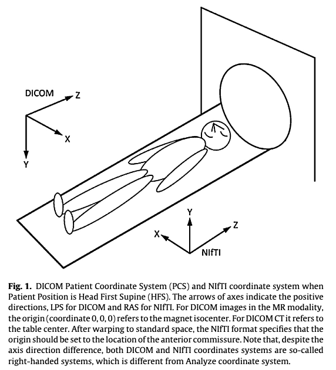
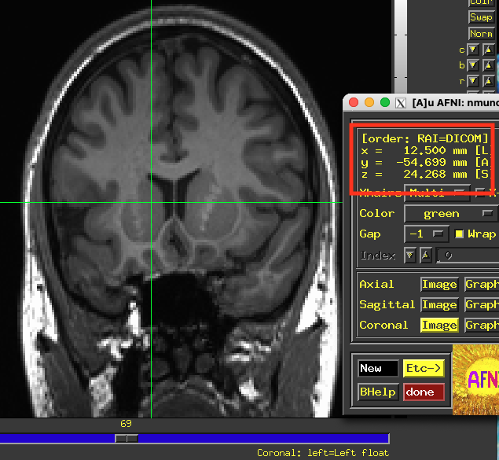
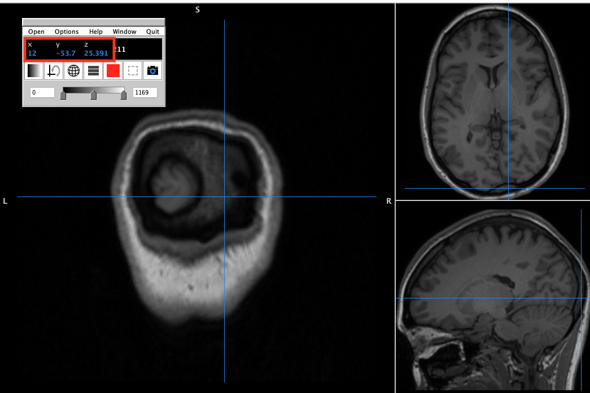
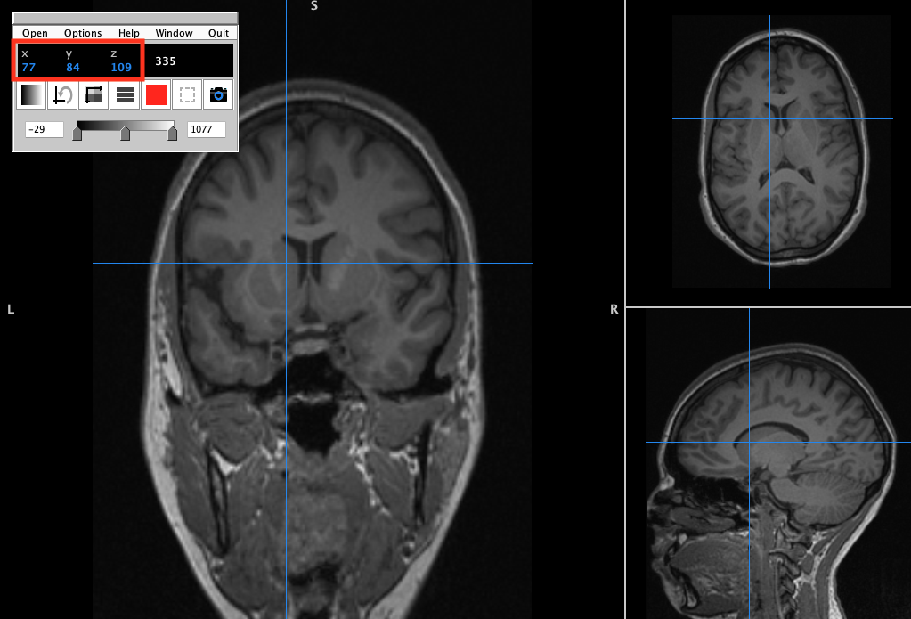
NIfTI: Conversion
- -z: GZip NIfTI file
- -f: Output name uses protocol, acquisition, series
- -o: Output location
- last: Input DICOM directory
NIfTI: Mining Header
- Same reasons as DICOM mining
- NIfTI metadata has less information
- Useful tools:
- AFNI’s 3dinfo
- FSL’s fslhd
- NiBabel’s img.header
- R’s RNifti::niftiHeader
- Matlab niftiinfo
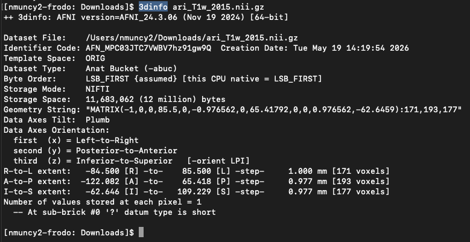
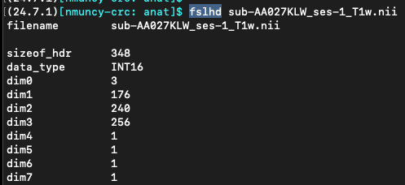
Sources
Medical Image
- Radiopaedia
- Sprawls
- Atkinson, D. (2022). Geometry in medical imaging: DICOM and NIfTI formats.
Medical Image: Three P’s
Medical Image: Metadata
Clinical Data: DICOM
DICOM: Structure
DICOM: Data Element
Research Data: Tower of Babel
NIfTI: Structure
- Althobaiti, N., Moria, K., Elrefaei, L., Alghamdi, J., & Tayeb, H. (2025). Construction of a Structurally Unbiased Brain Template with High Image Quality from MRI Scans of Saudi Adult Females. Bioengineering, 12(7), 722.
NIfTI: Resolve Issues
Glen, D. R., Taylor, P. A., Buchsbaum, B. R., Cox, R. W., & Reynolds, R. C. (2020). Beware (surprisingly common) left-right flips in your MRI data: an efficient and robust method to check MRI dataset consistency using AFNI. Frontiers in neuroinformatics, 14, 18.
NIfTI: Orientation
- Li, X., Morgan, P. S., Ashburner, J., Smith, J., & Rorden, C. (2016). The first step for neuroimaging data analysis: DICOM to NIfTI conversion. Journal of neuroscience methods, 264, 47-56.
MRI: data formats